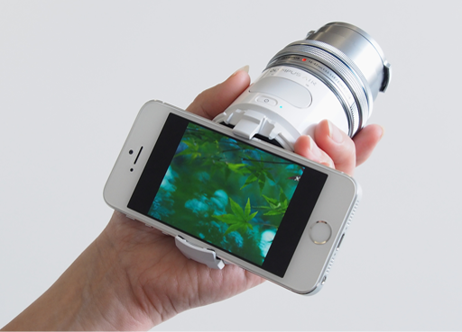
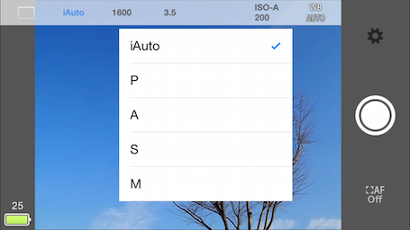

Olympus Camera Kit is the Software Development Kit (SDK) for OLYMPUS Open Platform Cameras (OPCs). You can easily develop applications to control a camera via wireless communication.
“Olympus Camera Kit” or “Camera Kit” means
“Olympus Camera Kit for Developers” in the SDK documentation site. There is another Olympus Camera Kit for Creators, which includes 3D CAD data for 3D printing.
Supported Camera
OLYMPUS AIR A01
Supported Wireless Communication Standards
Wi-Fi
Bluetooth Smart
Supported Platforms
iOS
Android
What You Can Do with Olympus Camera Kit
Olympus Camera Kit supports below functions.
Shoot

Shooting with or without live view.
Continuous shooting and recording movies in addition to shooting still image.
Issue notification when hardware button is pressed down.
Set Basic Configuration
It is possible to set parameters corresponding to each basic function below.

Exposure mode（program, aperture-priority, shutter-priority, manual, full auto (iAuto))
Shooting parameter (aperture value, shutter speed, exposure compensation value, ISO sensitivity, white balance)
Property List List of camera properties that define camera configuration. Common for both iOS and Android. See also API Reference to use camera properties.
Sample App How to use sample apps and explanation of source code.